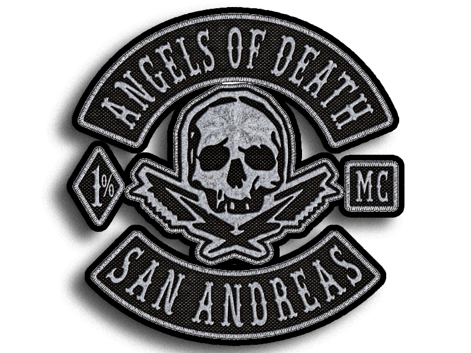

ROOT_ACCESS // AOD ARCHIVES
Burası Angels of Death Motorcycle Club'ın emir komuta zinciri dışında dönen, kanla yazılmış kayıtlarının saklandığı izole veri tabanıdır. Kulübün namına leke sürenler, kuralları çiğneyenler ve ANGELS'A saygısızlık eden farelerin şifreli dosyaları aşağıda listelenmiştir.
>> LÜTFEN İNCELEMEK İSTEDİĞİNİZ VERİ BLOĞUNU SEÇİN:

FILE_01: KIZIL GÜZEL
El Burro sınırları içerisinde tespit edilen rakip kulüp mensup yamalı şahıs hakkında gerekli işlem uygulanmıştır. Şahsın bölgede bulunması ve kulübümüze karşı sergilediği tutum göz önünde bulundurularak müdahalede bulunulmuştur. Olay sonucunda hedef etkisiz hale getirilmiş olup, bölgeden güvenli şekilde ayrılınmıştır. Olaya ilişkin görüntüler ve rapor ekte sunulmuştur.

FILE_02: MİNİKFARE_ED
El Burro bölgesinde tespit edilen rakip kulüp yamalısı fare lakaplı şahsa yönelik müdahale gerçekleştirilmiştir. Şahsın kulübümüze karşı provokatif hareketlerde bulunması ve kulübümüze sergilediği tavır nedeniyle gerekli işlem uygulanmıştır.

FILE_03: beyiniyerinesikinikullanan
Rakip kulüple bağlantılı olduğu bilinen aday üye, kulübümüz tarafından yürütülen operasyon kapsamında takip altına alınmıştır. Şahıs, bir bar çıkışında temas kurularak belirlenen noktaya yönlendirilmiş ve burada kontrol altına alınmıştır. Şahsa, bölgede kimin söz sahibi olduğu ve kulübümüze karşı atılacak adımların sonuçları açık şekilde iletilmiştir. Gerekli mesaj verildikten sonra operasyon sonlandırılmıştır.
SEC_ALERT: Bu sunucudan veri indirmek veya dışa aktarmak Tüzük Madde 8 gereği ölümle cezalandırılır. Sunucu sadece AODMC için rezervedir.
DECRYPTING FILE: Kızıl fıstığın, sonu...
El Burro Heights sokaklarında yanlış kapıyı çalmanın bir bedeli vardır. Kulüp evimizin çevresinde dolaşan ve defalarca uyarılmasına rağmen sınırlarını aşmaya devam eden kızıl kafalı şahıs, sonunda aradığı belayı buldu. Kulüp bölgesine yönelik provokatif hareketleri ve kulüp evimize kadar uzanan girişimleri sonucunda kendisine gerekli karşılık verilmiştir. Yaşanan olay sırasında şahıs silahla yaralanmış ve olay yerinden hastanelik şekilde ayrılmak zorunda kalmıştır. O gece El Burro Heights'ta herkes bir kez daha hatırladı; bazı bölgeler sahipsiz değildir. Yanlış insanların kapısına dayanmanın, yanlış renklerle yanlış yerde görünmenin bir sonucu vardır. Kulüp ayakta, kapılar hâlâ açık. Ancak bundan sonra içeri bakmadan önce iki kez düşünecekler. Olay raporu ve ilgili kayıtlar ektedir: Ölüm.
El Burro Heights'ta gün sıradan başlamıştı, ta ki kızıl kafalı farenin Audi Q8'iyle kulüp bölgesine girmesine kadar. Motor seslerinin yerini kısa süre sonra Stamped Rifle'dan çıkan mermiler aldı. Bölgeye yönelik bu pervasız saldırı, kulüp üyelerinin anında karşılık vermesiyle bambaşka bir yöne evrildi. Kurşunlar havada uçuşurken saldırganın planları saniyeler içerisinde çöktü. Açılan karşı ateş sonucunda kızıl kafalı fare ağır şekilde yaralandı ve olay yerinden hastanelik olarak çıkarıldı. Bölgeye korku salmaya geldiğini sanan adam, günün sonunda kendi canının derdine düşmüştü. Silah sesleri kısa süre içinde kolluk kuvvetlerini bölgeye çekti. Polis ekipleri olay yerinde inceleme yaptı, ifadeler toplandı ve çevredeki deliller değerlendirildi. Ancak yeterli kanıt elde edilemediğinden dosya sonuçsuz kaldı. Olayla bağlantılı hiçbir tutuklama gerçekleşmedi ve soruşturma kapatıldı. El Burro Heights o gece bir şeyi daha hatırladı: Bazı bölgelerin sahibi vardır. Yanlış insanlara gözdağı vermeye çalışanlar, bazen hastane yatağında bunun bedelini düşünmek zorunda kalır..
[ STATUS: INACTIVE // TARGET ELIMINATED ]
./EXIT & RETURN_TO_ROOTDECRYPTING FILE: minikfare (DISCIPLINARY_ACTION)...

Minik fare, Vespucci sokaklarında tek başına ve savunmasız şekilde dolaşırken etrafındaki sessizliğin ne anlama geldiğini fark edemedi. Bir gün önce yaşananların hesabının kapanmadığını sanıyordu. Yanılmıştı. Gözler uzun süredir üzerindeydi. Doğru an beklendi ve Vespucci'nin kalabalığı arasında kendisine yönelik operasyon başlatıldı. Kaçabileceği bir yol bulamadan köşeye sıkışan fare, dün attığı adımların ve yaptığı hataların bedeliyle yüzleşmek zorunda kaldı.
O gece amaç yalnızca bir mesaj vermekti. Bazı hesaplar unutulmaz, bazı sayfalar da kendiliğinden kapanmaz. Minik fareye, bir gün önce yaşananların cevabı sahada verildi ve gerekli karşılık gösterildi. Vespucci'de işler kısa sürdü. Operasyon tamamlandıktan sonra bölge sessizliğine geri döndü. Ancak orada bulunan herkes aynı şeyi öğrendi: Dün açılan hesap, bugün kapatılmıştı..
[ STATUS: ALIVE // DEMOTED & REPRIMANDED ]
./EXIT & RETURN_TO_ROOTDECRYPTING FILE: beyniyerinesikinikullananfare...
Bazen insanlar yanlış masaya oturur, yanlış insanlarla içki içer ve yanlış bölgelerde fazla rahat davranır. Rakip kulübün prospecti için de hikâye tam olarak böyle başladı. Dostlarımızın işlettiği barda günlerdir takıldığı fark edilen genç aday, dikkat çekmediğini sanıyordu. Ancak gözler çoktan üzerindeydi. Kulüp çevresinde "Mia" olarak bilinen kadın tarafından kurulan temas, onu farkında olmadan hazırlanan oyunun içine çekti. Gece ilerledikçe prospect, güvenli olduğunu düşündüğü kalabalıktan uzaklaştırıldı ve kulübün kontrolündeki bir noktaya götürüldü. Orada kendisine bölgede kimin söz sahibi olduğu, hangi renklerin nerede taşınacağı ve bazı kapıların neden çalınmaması gerektiği açık şekilde anlatıldı. p>
Saatler sonra operasyon sona erdiğinde genç aday, yaşadıklarının ağırlığıyla deniz kenarında tek başına bırakıldı. Arkasında ne dostları vardı ne de ona yardım edecek birileri. Sadece aldığı mesaj ve bundan sonra atacağı her adımda hatırlayacağı uzun bir gece. Bazen bir kurşun değil, verilen mesaj kalıcı iz bırakır. O gece deniz kıyısında bırakılan şey yalnızca bir prospect değil, rakip kulübe gönderilmiş açık bir uyarıydı..
[ STATUS: PASSED // PATCH GRANTED ]
./EXIT & RETURN_TO_ROOT